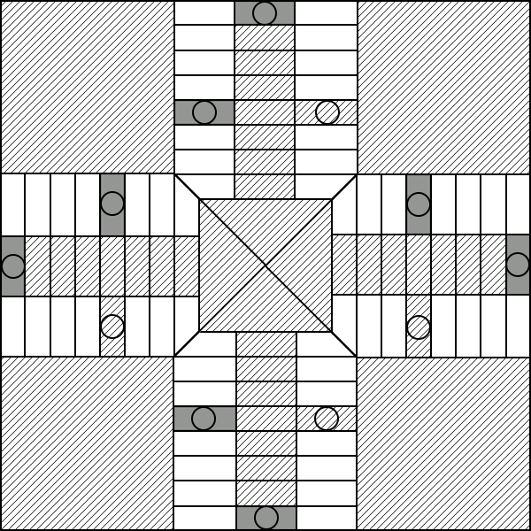

El parchís se juega sobre un tablero en forma de cruz alrededor de la cual están dispuestas 68 casillas, 16 de las cuales (debidamente diferenciadas de las demás) constituyen los llamados seguros. Se emplean cuatro grupos de cuatro fichas con un color diferente para cada uno de los grupos. Cada jugador utiliza el grupo de fichas de uno de los colores.
Existen además cuatro espacios ajenos a lo que es el propio recorrido de la carrera y cada uno del color respectivo de cada grupo de fichas, o casas, en los que cada jugador almacena las fichas que en ese momento no se hallan incorporadas al juego. Las fichas avanzan a lo largo del recorrido de 68 casillas según indique el dado de 6 caras que ha de arrojar cada jugador por turnos alternativos.
Al comienzo de la partida el tablero tiene este aspecto:

Vence el jugador que antes consiga introducir cada una de sus fichas en su respectiva casilla final, siguiendo las pautas de movimientos que se describen a continuación.